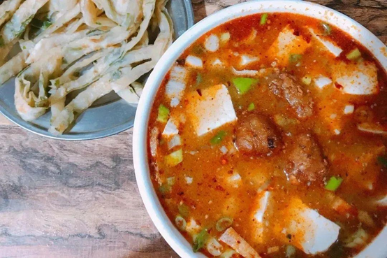
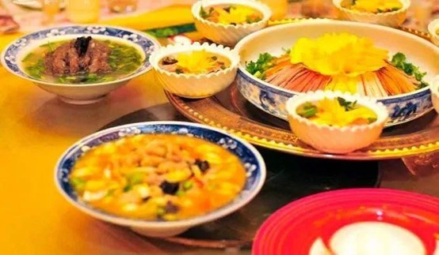

早起喝碗汤
是洛阳的全民运动
随便走在洛阳的某条街上，
放眼望去皆是大大小小的汤字儿招牌。
很多老洛阳人往往天不亮就赶往汤馆了，
为的是喝上头锅汤。
在洛阳人的认知里，七点钟喝汤（原味），八点钟喝油（加水多了，靠油出味），九点钟喝水。
汤，分荤素两样，
四荤：牛肉汤，羊肉汤，驴肉汤，杂肝汤；四素：豆腐汤，丸子汤，不翻汤，胡辣汤。
最受欢迎的，荤的要数牛肉汤，素的要看豆腐汤和丸子汤。
洛阳大部分牛肉汤是“甜”汤，
不放盐，讲究汤的鲜和醇厚，奶白的汤顺着喉咙往下滑，温润丝滑，味蕾和知觉在一刹那达到顶峰。
自己加盐之后就成了“咸汤”，
牛肉、葱粒浇上汤，浇上油辣子，把饼丝往汤里一泡，香气扑鼻。
要是嫌荤的过于油腻，完全可以来碗素汤，豆腐汤或者丸子汤。
豆腐汤虽是素汤，料儿却是十足的。
以白豆腐为主料，姜做辅料，再加上烫好的粉条、油豆腐丝和生菜，撒些葱花和辣椒油，
把汤往上一浇，鲜香四溢。
别看豆腐汤简单，光是料油就要用香叶、小茴香、八角、丁香、桂皮等十几种香料炒香，
羊脂般的嫩豆腐，四四方方，不破不碎，
光咬上那么一口，豆香便与汤味融为一体了。
洛阳人的美食里最引以自豪的是传承了一千多年的洛阳水席，
8凉16热，热菜也多带汤。
水席有两个特点，
一是所有热菜皆是汤汤水水；
二是上菜犹如行云流水般，吃完一道再上一道。
其中的重头菜，是征服了女皇武则天的牡丹燕菜。
很多美食博主曾复刻牡丹燕菜，
主料是萝卜丝，配以蟹柳、火腿、笋丝等，食材可穿针而过，丝丝均一，
菜品上桌，中间如一朵盛开的牡丹花，颜值极高。
错过这样的美食，等于白来洛阳。
外地人可能不知道，洛阳人喝汤用筷子，不用勺子。
在洛阳还有一道面食，反而要用勺子，那就是浆面条。
无论街角旮旯的小吃摊，还是高大上的饭店酒楼，都能见到浆面条的身影。
上好的豌豆或绿豆，磨浆去渣，放上一两天使浆水发酵变酸，就是决定浆面条味道好坏的浆水。
等浆水煮沸，把面条、调料放进去，勾点儿面糊，多煮一会儿，鲜香四溢的浆面条就出锅了。
正宗的浆面条看似烂糊却筋骨犹存，汤有一种天然的酸香，酸中带香，香中有酸，其中黄豆、花生豆和芹菜是点睛之笔。
总要来一趟洛阳吧，
看一看气势恢宏的明堂天堂、庄严厚重的龙门石窟，
逛一逛时光缓慢的老城、人潮汹涌的十字街，
尝一尝洛阳的味道。